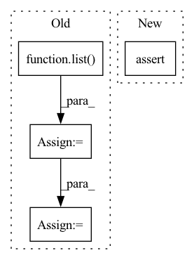

Pattern ID :884
Before Change
def extract_events(self, raw_edf):
// all events
events = np.array(
list( zip(raw_edf.info["gdf_events"][1], raw_edf.info["gdf_events"][2]))
)
// only trial onset events
trial_mask = [ev_code in [769, 770, 771, 772, 783] for ev_code in events[:, 1]]
trial_events = events[trial_mask]
assert len(trial_events) == 288, "Got {:d} markers".format(len(trial_events))
// event markers 769,770 -> 1,2
trial_events[:, 1] = trial_events[:, 1] - 768
// possibly overwrite with markers from labels file
if self.labels_filename is not None:
classes = loadmat(self.labels_filename)["classlabel"].squeeze()
trial_events[:, 1] = classes
unique_classes = np.unique(trial_events[:, 1])
assert np.array_equal(
[1, 2, 3, 4], unique_classes
), "Expect 1,2,3,4 as class labels, got {:s}".format(str(unique_classes))
// now also create 0-1 vector for rejected trials
trial_start_events = events[events[:, 1] == 768]
assert len(trial_start_events) == len(trial_events)
artifact_trial_mask = np.zeros(len(trial_events), dtype=np.uint8)
artifact_events = events[events[:, 1] == 1023]
for artifact_time in artifact_events[:, 0]:
i_trial = trial_start_events[:, 0].tolist().index(artifact_time)
artifact_trial_mask[i_trial] = 1
// mne expects events with 3 ints each:
events = np.zeros((len(trial_events), 3), dtype=np.int32)
events[:, 0] = trial_events[:, 0]
events[:, 2] = trial_events[:, 1]
return events, artifact_trial_maskAfter Change
train_set = True
else:
train_set = False
assert (
"cue unknown/undefined (used for BCI competition) "
in name_to_code
)In pattern: SUPERPATTERN
Frequency: 4
Non-data size: 4
Instances Fragment ID: 4281601
Project Name: braindecode/braindecode
Commit Name: b63192caeb41424761592609c8d426b7ec23890b
Time: 2019-05-22
Author: robintibor@gmail.com
File Name: braindecode/datasets/bcic_iv_2a.py
M Class Name: BCICompetition4Set2A
N Class Name: BCICompetition4Set2A
M Method Name: extract_events(2)
N Method Name: extract_events(2)
M Parent Class: object
N Parent Class: object
M File Name: braindecode/datasets/bcic_iv_2a.py
N File Name: braindecode/datasets/bcic_iv_2a.py
M Start Line: 43
M End Line: 75
N Start Line: 44
N End Line: 90
Before Change
sample = load_numpy_list(data_originals_path)[0]
assert isinstance(sample, dict)
assert len(sample) == 1
image_raw = list( sample.values()) [0]
assert isinstance(image_raw, numpy.ndarray)
image_raw = image_raw[:224, :224].astype(numpy.float32) / 255
image_raw = numpy.expand_dims(numpy.transpose(image_raw, (2, 0, 1)), 0)
image_raw = numpy.ascontiguousarray(image_raw)
assert image_raw.shape == (1, 3, 224, 224)
assert image_raw.dtype == numpy.float32After Change
pipeline = Pipeline.create(task="custom", model_path=model_path)
assert isinstance(pipeline, CustomTaskPipeline)
assert pipeline.input_schema == object
assert pipeline.output_schema == object
assert pipeline.process_inputs(1.2345) == 1.2345
assert pipeline.process_engine_outputs([1.2345], asdf=True) == [1.2345] Fragment ID: 4281664
Project Name: neuralmagic/deepsparse
Commit Name: 06c45eb10b3aa6932d8786f34ca3187f760d87ff
Time: 2022-08-05
Author: 109536191+corey-nm@users.noreply.github.com
File Name: tests/deepsparse/pipelines/test_custom_pipeline.py
M Class Name: AnonimousClass
N Class Name: AnonimousClass
M Method Name: test_no_input_call(1)
N Method Name: test_no_input_call(0)
M Parent Class:
N Parent Class:
M File Name: tests/deepsparse/pipelines/test_custom_pipeline.py
N File Name: tests/deepsparse/pipelines/test_custom_pipeline.py
M Start Line: 62
M End Line: 82
N Start Line: 58
N End Line: 67
Before Change
// Init shared embedding keys
self._shared_embedding_keys = list() if shared_embedding_keys is None else shared_embedding_keys
if isinstance(self._shared_embedding_keys, (list, ListConfig)):
self._shared_embedding_keys = {step_key: list( self._shared_embedding_keys) for step_key in
self.action_spaces_dict.keys()}
else:
assert isinstance(self._shared_embedding_keys, (dict, DictConfig)), f"type: " \
f"{type(self._shared_embedding_keys)}"
self._shared_embedding_keys = {step_key: list(shared_keys) for step_key, shared_keys in
self._shared_embedding_keys.items()}
self._use_shared_embedding: Dict[StepKeyType, bool] = {step_key: len(shared_keys) > 0 for step_key, shared_keys
in self._shared_embedding_keys.items()}
self._shared_embedding_nets: Dict[StepKeyType, InferenceBlock] = dict()
After Change
self.model_builder = Factory(BaseModelBuilder).instantiate(model_builder)
self.model_builder.init_shared_embedding_keys(self.action_spaces_dict.keys())
assert self.model_builder.shared_embedding_keys.keys() == self.observation_spaces_dict.keys()
self._shared_embedding_nets: Dict[StepKeyType, InferenceBlock] = dict()
self.save_models() Fragment ID: 4281610
Project Name: enlite-ai/maze
Commit Name: 08d93598ae41ad9f02bf30b1e0f7205c521049e8
Time: 2021-06-24
Author: office@enlite.ai
File Name: maze/perception/models/template_model_composer.py
M Class Name: TemplateModelComposer
N Class Name: TemplateModelComposer
M Method Name: __init__(8)
N Method Name: __init__(9)
M Parent Class: BaseModelComposer
N Parent Class: BaseModelComposer
M File Name: maze/perception/models/template_model_composer.py
N File Name: maze/perception/models/template_model_composer.py
M Start Line: 68
M End Line: 84
N Start Line: 74
N End Line: 78
Before Change
// broadcast to this shape
// This will work if the original tensor shape was any dimensions as long as the first dimension matches the
// encoding tensor shape
shape = list( tensor.shape)
num_channels = shape.pop(ch_axis)
encoding = encoding * torch.ones(shape + [num_channels]).to(tensor.device)
// we permute the resulting tensor back to OIHW/IOHW shapeAfter Change
if not isinstance(encoding, torch.Tensor):
encoding = torch.tensor(encoding).to(tensor.device) // convert encoding to a tensor
assert len(encoding.shape) <= 1 // Should be 1-dimensional tensor
if encoding.numel() == 1:
return encoding Fragment ID: 4281677
Project Name: quic/aimet
Commit Name: 2062c78e97c677c749f400c4e84cb5da741b3e6c
Time: 2023-04-11
Author: quic_kyunggeu@quicinc.com
File Name: TrainingExtensions/torch/src/python/aimet_torch/quantsim_straight_through_grad.py
M Class Name: AnonimousClass
N Class Name: AnonimousClass
M Method Name: broadcast_to_tensor(3)
N Method Name: broadcast_to_tensor(3)
M Parent Class:
N Parent Class:
M File Name: TrainingExtensions/torch/src/python/aimet_torch/quantsim_straight_through_grad.py
N File Name: TrainingExtensions/torch/src/python/aimet_torch/quantsim_straight_through_grad.py
M Start Line: 78
M End Line: 93
N Start Line: 78
N End Line: 90